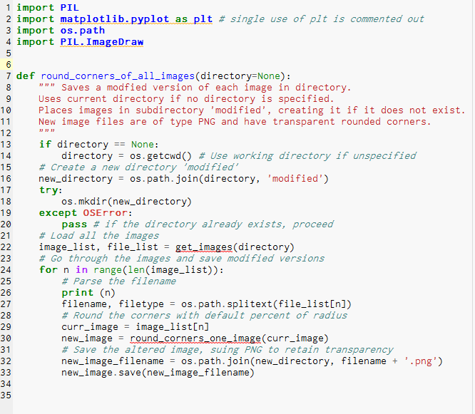
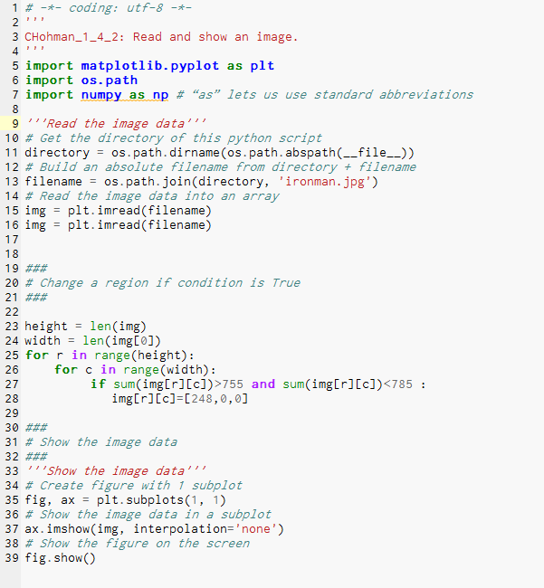
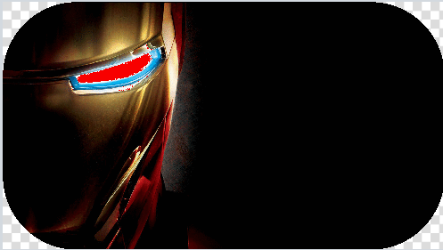

Whack a Mole
Play our android developed app whack a mole. Whack the moving mole for a point. Avoid whacking the human or lose one point. Play for 30 seconds and use the reset button to reset the game and attempt to beat your personal record.
THE FIRST DATE
Play our python developed quest game, making decisions on the first date. You met your date on bumble and decide to go out. What should you wear? When should you pick her up? What should you do? Go throught the night with the goal to set up another date and avoid the friendzone.
-- Click the image below --
TIC TAC TOE Python Game
Check out our Tic-Tac-Tac Game developed in Python. The tic tac toe board prints out inside the python and recieves the user input of which position they choose to play an X or O. Get three in a row and win! Avoid a tie or play again!
Python Picture Modification
Rounded Corner Code
Pixel Modification Code
Original
Modified
PYTHON GRAPHIC DISPLAY
This project features a graphic display of a large public data set created in python. The data was organized in a excel file
then read in to python to be diplayed in the form of a bar graph. I collaboratively worked on this project with Danica and
had a phenomenal time creating and learning new code.
Information displayed to support the following question.
Question: How has the dropout rate of high school students changed from 2000 to 2015 between males and females?